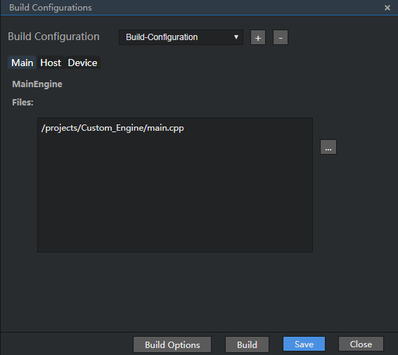
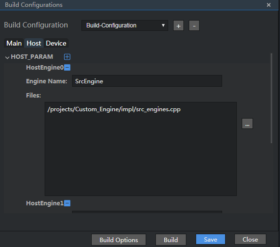
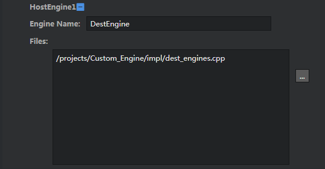

ASIC Scenario
You can compile a custom project in either of the following ways:
- You do not need to compile Makefile, while you can compile a project on the compilation GUI available on Mind Studio.
- Compile Makefile and run the background command to compile a project.
The following describes these two methods in detail.
Compiling a Project on Mind Studio
In this compilation mode, you do not need to compile Makefile. The detailed procedure is as follows:
Select the project whose project structure needs to be configured, and then choose Build > Edit Build Configuration. The window for configuring a custom project is displayed, as shown in Figure 1.
Configure a custom project.
The custom configuration project consists of three parts: Main, Host, and Device.
Each .so file needs to be configured on the corresponding tab page based on the side value of each engine in the sample.prototxt file.
Table 1 describes the Main, Host, and Device parameters.
Table 1 Configuration description
 NOTE:
NOTE:
The .so file needs to be signed to avoid being tampered with. The signing method is as follows:- Call the RSA_generate_key interface of the OpenSSL tool to generate the public key pub.pem and the private key pri.pem. The recommended key length is greater than or equal to 2048 bits
- Use the private key to sign the .so file using the SHA256 algorithm to generate the .so.signature file, which is stored in the same directory as the original .so file.
- Call the SetPublicKeyForSignatureEncryption interface to transfer the public key to HiAI Engine. For details about the APIs, see the HiAI Engine API Reference.
Which of the three tab pages is configured depends on which side the .so file of the engine needs to be stored. In this example, an ASIC project is used. SrcEngine and DestEngine run on the host. FrameworkerEngine runs on the device. The following figure shows the compilation configuration example.
Figure 2 Configuration example on the Main tab page
Click Build Options in Figure 2. A dialog box is displayed, as shown in Figure 3.
NOTE: - If you do not click Build Options or do not configure the configuration items in the Build Options configuration window, the default values are used during compilation.
- In Build Options, you need to set Include Path on the Main and Device tab pages, for example, /projects/Custom_Engine.
Table 2 describes the parameters on each tab page of the Build Options configuration window.
Table 2 Parameter description for Build Options configuration
Figure 4 shows the configuration example of the Host tab page.
Figure 4 Configuring SrcEngine on the Host tab page
Click
 next to HOST_PARAM to add a DestEngine, as shown in Figure 5.
next to HOST_PARAM to add a DestEngine, as shown in Figure 5.Figure 5 Configuring DestEngine on the Host tab page
Figure 6 shows the configuration example of the Device tab page.
After the configuration is complete, click Save to save the project structure configuration. Click Build or choose Build > Build > Project Name on the menu bar to compile the project structure.
The project structure configuration can be saved in either of the following ways:
In the Build Options window, if Automatically regenerate CMakeLists.txt is selected, the build window will display the generation information of CMakeLists.txt files, and the build folder that stores the CMakeLists.txt files is automatically generated in the root directory of the project, as shown in Figure 7.
If Automatically regenerate CMakeLists.txt in the Build Options window is deselected:
- If the build folder does not exist in the root directory of the project or the build folder in the root directory of the project does not contain the CMakeLists.txt file, the build folder containing the CMakeLists.txt file is automatically generated, as shown in Figure 7.
If the build folder containing the CMakeLists.txt file exists in the root directory of the project, the Automatically regenerate CMakeLists.txt dialog box is displayed, as shown in Figure 8.
Figure 8 Automatically regenerate CMakeLists.txt dialog box

If you click OK, the original CMakeLists.txt file is overwritten.
If you click Cancel, the CMakeLists.txt file in the current project directory is used for compilation, and no more CMakeLists.txt file is generated.
After the project compilation is complete, the build window displays the result, as shown in Figure 9.
Figure 9 Compilation output window

After the compilation is successful, the out folder is generated in the project root directory, as shown in Figure 10.
Figure 10 out folder after compilation

The Custom_Engine file in the out folder is the executable file generated by the Main Engine.
NOTE: - The folders and files that are not selected by the Main Engine, Host Engines, and Device Engines in the project are skipped during compilation.
- If a project that has not been configured is compiled in one-click mode, the build folder that exists in the root directory of the project is directly used to compile the project if the folder contains the CMakeLists.txt file. Otherwise, the project is compiled using the selected configuration.
- If a project is renamed, you need to change the path value of Files on the Main, Host, and Device tab pages. If the previous configuration is run, the generator generates an invalid project with the original project name based on the path value in the original Files.


Running the Background Command to Compile a Project
Modify Makefile.
Makefile has been provided in the root directory of the sample project. You can modify Makefile based on the sample. The path of Makefile is Custom_Engine/Makefile.
Change the value of sample/hiaiengine in TOPDIR and LOCAL_DIR to the project name. The project name is user-defined during project creation, for example, Custom_Engine, as shown in Figure 11.
Figure 11 Modifying the project name in Makefile

LOCAL_MODULE_NAME is the name of the executable file that is generated. You can customize it. For example, you can change it to Custom_Engine.
Change the value of local_shared_libs_dirs to the actual link library /uihost/lib （configured in Configuration Library Information and Environment Variable）, as shown in Figure 12.
Figure 12 Modifying the library path in Makefile

Makefile is parsed as follows:
TOPDIR := $(patsubst %/Custom_Engine,%,$(CURDIR)) LOCAL_DIR := $(TOPDIR)/Custom_Engine INCLUDE_DIR := $(TOPDIR)/include LOCAL_MODULE_NAME := Custom_Engine CC_FLAGS := -std=c++11 local_src_files := \ # Source file related to compilation $(LOCAL_DIR)/main.cpp \ $(LOCAL_DIR)/impl/impl_engines.cpp \ $(LOCAL_DIR)/impl/ai_model_engine.cpp \ local_inc_dirs := \ # Header file related to compilation $(LOCAL_DIR) \ $(INCLUDE_DIR)/inc \ $(INCLUDE_DIR)/third_party/protobuf/include \ $(INCLUDE_DIR)/third_party/cereal/include \ $(INCLUDE_DIR)/libc_sec/include local_shared_libs_dirs := \ # Path of the library to be linked, corresponding to Lib Path on the GUI. $(TOPDIR)/uihost/lib \ local_shared_libs := \ # DLL to be linked, corresponding to Link Library on the GUI hiai_server_cmodel \ hiai_common \ matrix_cmodel \ pthread \ protobuf \ include ./cc_rule.mk # Contains other makefiles.The cc_rule.mk file is parsed as follows:
Q := @ exist = $(shell if [ -f $(../../toolchains/aarch64-linux-gcc6.3/bin/aarch64-linux-gnu-g++) ]; then echo "exist"; else echo "notexist"; fi;) ifeq ($(exist), exist) #exit 0 CPP := g++ else exit 0 endif FULL_SRC_FILES := $(local_src_files) FULL_INC_DIRS := $(foreach inc_dir, $(local_inc_dirs), -I$(inc_dir)) SHARED_LIBRARIES := $(foreach shared_lib, $(local_shared_libs), -l$(shared_lib)) SHARED_LIBRARIES_DIRS := $(foreach shared_lib_dir, $(local_shared_libs_dirs), -L$(shared_lib_dir) -Wl,-rpath-link,$(shared_lib_dir)) LOCAL_OBJ_PATH := $(LOCAL_DIR)/out # Defines the compilation output path. LOCAL_LIBRARY := $(LOCAL_OBJ_PATH)/$(LOCAL_MODULE_NAME) FULL_C_SRCS := $(filter %.c,$(FULL_SRC_FILES)) FULL_C_OBJS := $(patsubst $(LOCAL_DIR)/%.c,$(LOCAL_OBJ_PATH)/%.o, $(FULL_C_SRCS)) FULL_CPP_SRCS := $(filter %.cpp,$(FULL_SRC_FILES)) FULL_CPP_OBJS := $(patsubst $(LOCAL_DIR)/%.cpp,$(LOCAL_OBJ_PATH)/%.o, $(FULL_CPP_SRCS)) all: do_pre_build do_build do_pre_build: $(Q)echo - do [$@] $(Q)mkdir -p $(LOCAL_OBJ_PATH) do_build: $(LOCAL_LIBRARY) | do_pre_build $(Q)echo - do [$@] # $(Q)rm -rf $(LOCAL_OBJ_PATH) $(LOCAL_LIBRARY): $(FULL_C_OBJS) $(FULL_CPP_OBJS) | do_pre_build $(Q)echo [LD] $@ $(Q)$(CPP) $(CC_FLAGS) -o $(LOCAL_LIBRARY) $(FULL_C_OBJS) $(FULL_CPP_OBJS) -Wl,--whole-archive -Wl,--no-whole-archive -Wl,--start-group -Wl,--end-group $(SHARED_LIBRARIES_DIRS) $(SHARED_LIBRARIES) $(FULL_C_OBJS): $(LOCAL_OBJ_PATH)/%.o : $(LOCAL_DIR)/%.c | do_pre_build $(Q)echo [CC] $@ $(Q)mkdir -p $(dir $@) $(Q)$(CPP) $(CC_FLAGS) $(FULL_INC_DIRS) -c $< -o $@ $(FULL_CPP_OBJS): $(LOCAL_OBJ_PATH)/%.o : $(LOCAL_DIR)/%.cpp | do_pre_build $(Q)echo [CC] $@ $(Q)mkdir -p $(dir $@) $(Q)$(CPP) $(CC_FLAGS) $(FULL_INC_DIRS) -c $< -o $@
Go to the /projects/Custom_Engine directory and run the make -j command. After the compilation is successful, the executable program of the project is generated in the Custom_Engine/out directory, as shown in Figure 13.